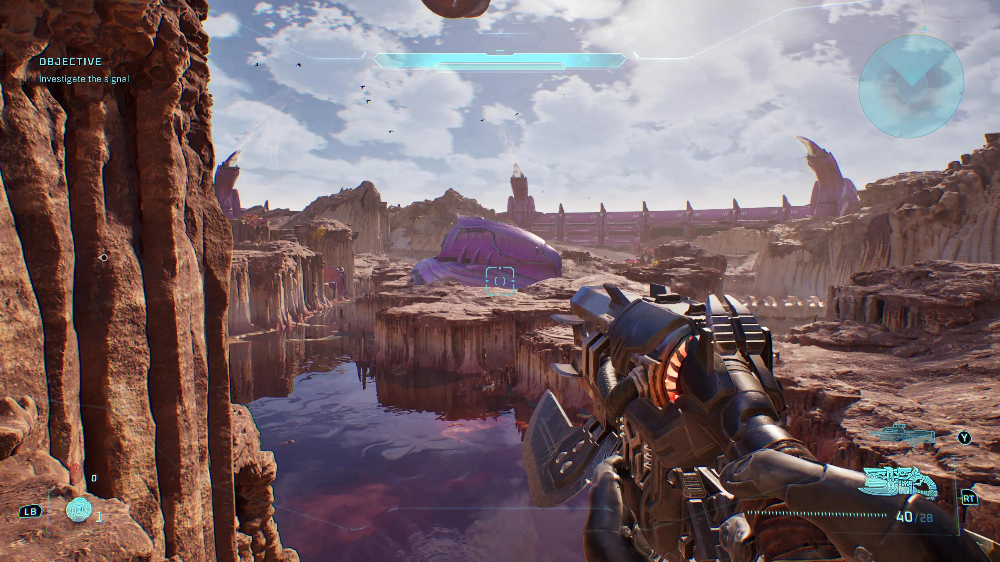
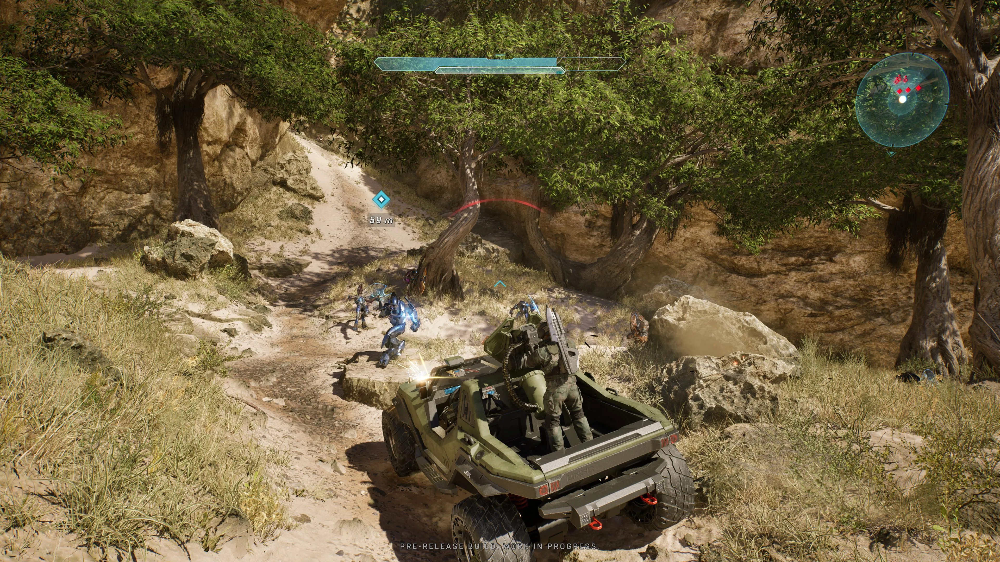
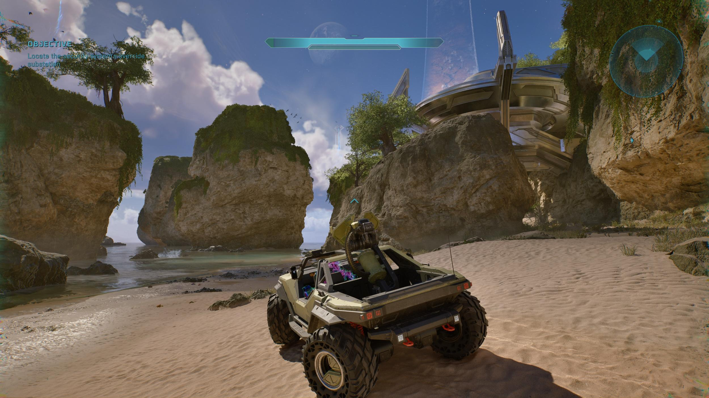
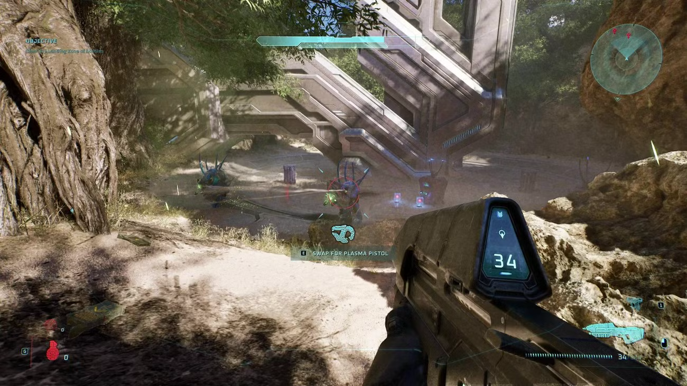
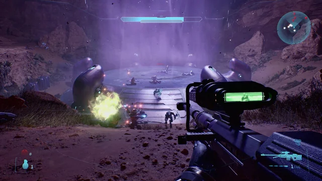
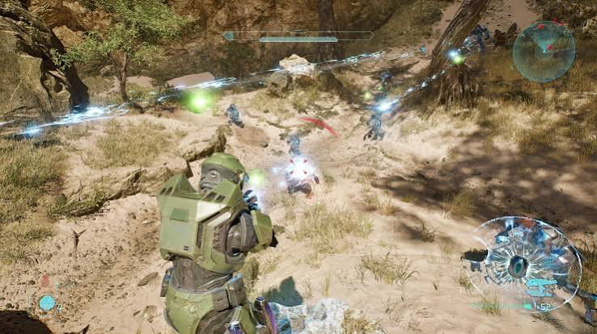

Ficha Táctica
Año de Lanzamiento: 2026
Desarrollador: 343 Industries (Halo Studios)
Consola: Xbox Series X/S, PlayStation 5, PC
Género: Disparos en primera persona (FPS)
Informe de Misión
Concebido como la reinvención definitiva de la campaña que inauguró la franquicia en 2001, Halo: Campaign Evolved rehace desde cero los eventos vividos en la Instalación 04 apoyándose en un motor gráfico de última generación. El título amplía significativamente la narrativa clásica al añadir misiones prólogo totalmente jugables ambientadas antes de la evacuación de la nave Pillar of Autumn, permitiendo al jugador experimentar combates tácticos en zonas urbanas junto al joven Sargento Avery Johnson en la víspera de la Caída de Reach.
Además de actualizar la calidad cinemática y los sistemas de combate a estándares contemporáneos, esta versión expande los mapas originales del anillo Halo con mecánicas de exploración vertical, nuevas variantes de enemigos del Covenant y biomas enriquecidos. La trama profundiza en los dilemas morales de Cortana al analizar los archivos Forerunner en tiempo real y ofrece una inmersión renovada en los terroríficos niveles infestados por el Flood, consolidando un puente narrativo perfecto entre la Trilogía del Reclamador y los inicios de la leyenda del Jefe Maestro.
Registro Visual





